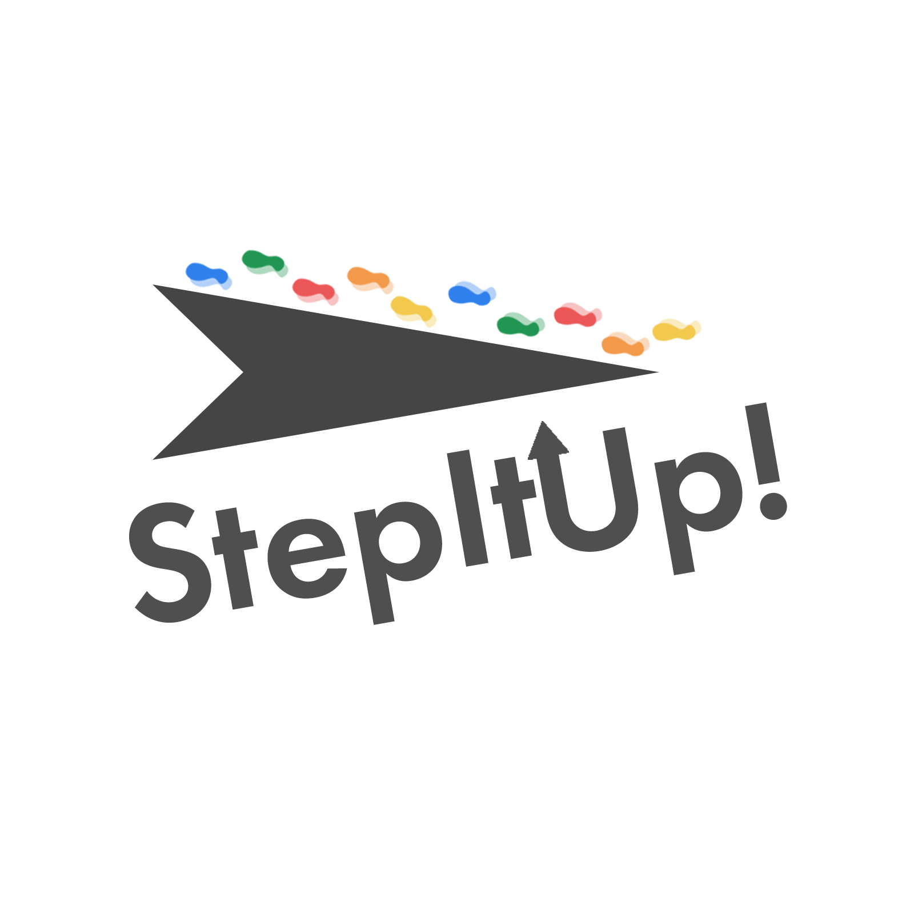
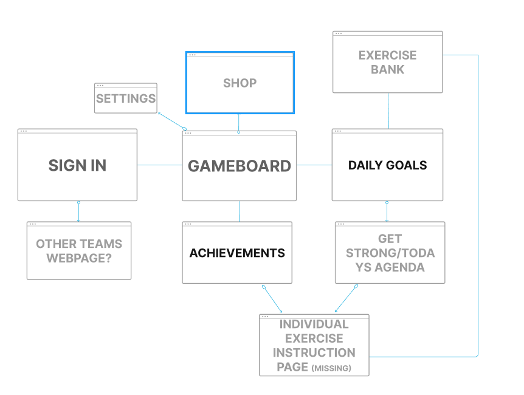
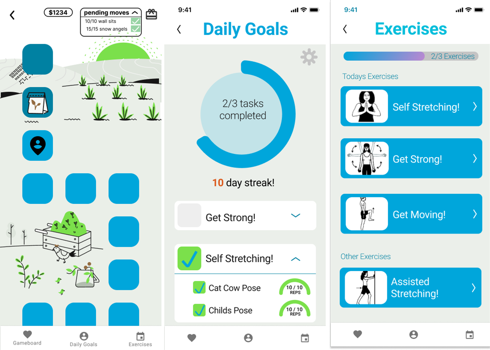

HuskyADAPT: Step It Up
Mission Statement
Create a mobile app that motivates teenage (13-18) cancer care
patients at Seattle Children’s Hospital to improve their health through physical activity.

Overview
Currently, Seattle Children’s Hospital is having trouble motivating older patients into participating in physical therapy.
By engaging patients with a mobile app, we hope to improve the engagement and health of our target audience.
- Team: 8+ designers and developers
- Time: Year-long club project
- Tools: Figma
User Research
With Covid-19 and HIPAA preventing face-to-face interviews with patients, user research was
done with an anonymous survey sent to ~20 of the
patients in the cancer care center at Seattle Children’s Hospital.
Although our research was limited, we could understand the stress and empathize with the situation of
our users. Using what we knew about existing problems at the hospital,
along with our survey data, we were able to create user personas and better understand their situation.
Research Takeaways
- Patients are in a high-stress environment.
- Older patients need a more mature method of motivation for physical therapy.
- HIPAA privacy guidelines are important to protect the patient.
- Patients may stay at the hospital anywhere from 1 day to several months.
- Patients have different physical abilities and barriers; the exercises we give them need to be individualized.
- Patients are immunocompromised and must be completely isolated.
- Younger patients (4-10) are motivated to engage in physical therapy much easier.
Ethics
- In addition to adhering to HIPAA rules, these children are under intense stress, and often manipulating and exploitive design can create more, unnecessary burden to them.
- Creating an app that motivates patients effectively is not the only consideration. The mental health of our patients comes first. This includes protecting them from competition against other patients who may be at different levels of physical ability.
Information Architecture
Here is the information architecture.

Hi-Fidelity Prototype
Here is the hi-fi prototype made in Figma.
Our final design settled on creating an app that translates exercises into progress on a gameboard.
On that gameboard, one can earn in-game currency which they can redeem for flowers, shrubs, trees, and
other accessories to decorate their virtual garden. As their progress grows, so does their garden.

Takeaways
- Good human-centered design goes beyond improving engagement or click-through rate, it creates an experience that is more accessible and equitable.
- Considering the mental health of users is equally important as effectiveness when interacting with sensitive groups like children.
- Proper UX research allows for designers to empathize with users, creating better experiences.